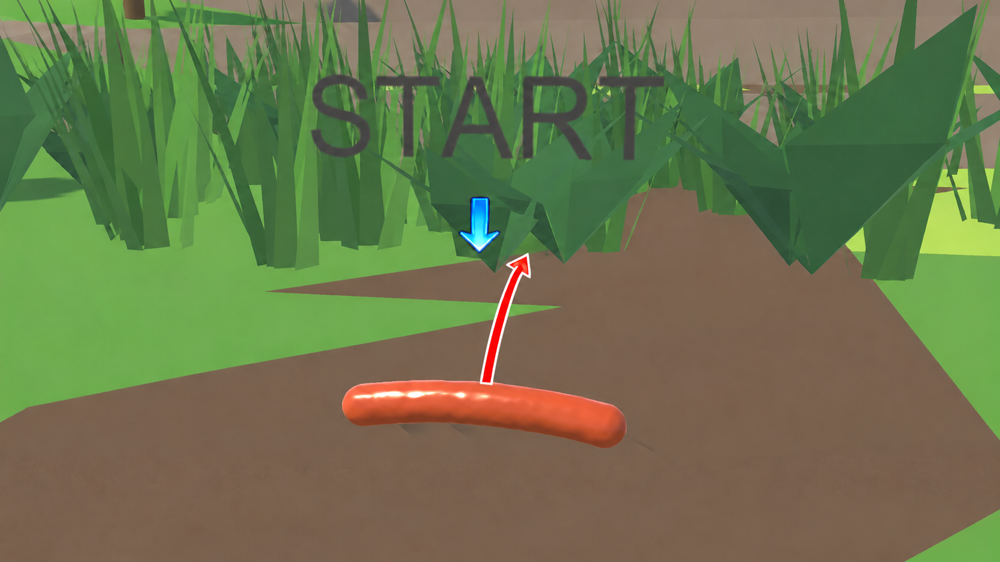
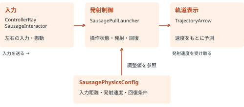

PROJECT / Unity / C# / VR
BeyondTheSausage
ソーセージを題材にしたVRゲーム。Made in Japan XR Projectの最終選抜チームとして、約50万円の支援を受けながら開発中。
開発中 / 支援プログラム採択

担当：ゲーム企画全般・ソーセージの操作
ゲームの原案・企画全般と、ソーセージを操作する仕組みを担当しています。腕の動きを発射へ変える座標変換、片手・両手の入力管理、発射・接地、軌道予測、振動フィードバックを実装しています。
ステージ・ギミック・レベルデザインの制作は別メンバーが担当。チーム・メンターとの議論やプレイ評価を踏まえ、操作とコースの整合を取りながら開発しています。
担当箇所・技術解説を読む（PDF・3ページ） ↗GOATと合わせて応募資料をダウンロード
本作の技術解説PDFと、GOATのゲーム本体・PDF・動画・閲覧用ソースコードをまとめています。BeyondTheSausageのゲーム本体・APK・動画は含みません。
2作品の資料ZIPをダウンロード 約55MB開発情報
- 使用技術
- Unity / C# / VR
- 制作期間
- 現在開発中
- イベント・支援
- Made in Japan XR Project
ゲームの概要と企画の意図
ソーセージを引っ張って飛ばし、空中で立て直しながらコースを攻略するVR物理アクションです。開発プロジェクト名は「TheS」、ゲームタイトルは「BeyondTheSausage」です。
操作は分かりやすく、攻略には工夫と習熟の余地を残す。飛ばす方向や強さを試しながら、失敗の理由を理解して再挑戦できるゲームを目指しています。思いついたギミックを並べるだけでなく、序盤で学んでほしい操作を先に整理し、目的と導入順をステージ担当と共有しています。
クラス構成：入力・発射・表示を分け、調整値をまとめる

入力・発射・表示を別のMonoBehaviourコンポーネントに分け、役割ごとに変更しやすくしました。左右の入力はLateUpdateで集約して二重発射を防ぎます。調整値はScriptableObjectとして保持し、コードを変えずに操作感を試せる構成です。
工夫① 腕の動きと、視点の移動を切り分ける
課題：狙う操作と引っ張る動作が競合する
初期のRayを当てて掴む方式では、腕の位置が制約され、空中で対象を捉え直しにくいという課題がありました。現在はRayの命中を条件にせず、Triggerで操作を開始する方式に変更しています。
実装：Rig内の位置差から、引っ張り量を計算
手のワールド座標だけで計算すると、視点を移動させた分まで発射の強さへ加わります。現在のRig内で手の位置差を求め、掴み始めの変換行列で方向を戻すことで、Rig移動による入力の上乗せを抑えています。
処理の概要：手の位置をRig内へ変換 → 開始時との差を計算 → 掴み始めの基準でワールド方向へ戻す。詳細なソースコードは非公開としています。
腕の基本移動量は35cmで最大入力になる設定とし、前後方向の可動域も補助。入力距離と発射速度を別々に調整できる構成にしています。
工夫② 両手入力と空中操作を、状態で管理する
左右のController入力を収集し、LateUpdateでまとめて処理します。両手で引いていても最初のReleaseで一度だけ発射し、両手が離れた有効な入力を確認するまで再受付をロック。追跡や入力の喪失は、発射ではなくキャンセルとして扱います。
回数回復は、衝突の有無だけでなく接触面の法線で判定。床・坂と壁・天井を分け、引っ張り中は回復させません。離陸できなかった場合は、発射後の待ち時間と接触の継続時間を確認して回復させます。
工夫③ 発射と軌道予測で、速度計算を共有する
実発射と予測表示の両方で同じ速度計算を使い、手数・パワー倍率・速度上限をそろえています。予測は重力と減衰を使って経路を計算し、自己ColliderやTriggerを除外した最初の衝突で打ち切ります。
衝突までの経路を求めてから表示率を適用し、現在は50%を初期値にしています。発射の強さとガイドの長さを分離することで、操作の補助と試行錯誤のバランスを調整できます。
予測は点の経路に対する近似です。本体の回転・体積、バウンド、動く足場の未来位置は再現せず、正確な着地点を保証するものではありません。
工夫④ 力の溜まり具合を、振動でも伝える
予測発射速度と最大速度の比に応じて、引っ張り中の振動の強さと間隔を変化させます。操作を受け付けた手にだけ通知し、発射時は引っ張り振動から発射用の振動へ切り替えます。
入力距離、発射倍率、回復条件、Rigidbodyの値はScriptableObjectに集約。操作感をコード変更なしで調整し、ステージ担当と基準を共有できる仕組みにしています。
実装済みの内容と、今後の取り組み
現在の実装
片手・両手入力、空中での再発射、接地回復、軌道ガイド、引っ張り・発射の振動。チーム制作の山・塔・メニューなども手元の開発版へ統合されています。
これからの検証・改善
初心者の操作理解、ガイド50%の分かりやすさ、操作基準とステージ配置の整合を確認します。Quest実機での快適さ・負荷の検証や、効果音など手触りの改善も進めたいと考えています。
将来の構想
習得に合わせた連続コースの拡充を目指します。マルチプレイやランキングはシングルプレイ完成後の候補で、現時点の実装済み機能には含めません。
2026年10月時点の開発コードと、第1〜4回メンタリング議事録に基づく紹介です。開発中のため、仕様・調整値は変わる可能性があります。
選抜・開発支援
Made in Japan XR Projectの最終チームに選抜されました。約50万円の支援を受けながら、現在も開発を進めています。